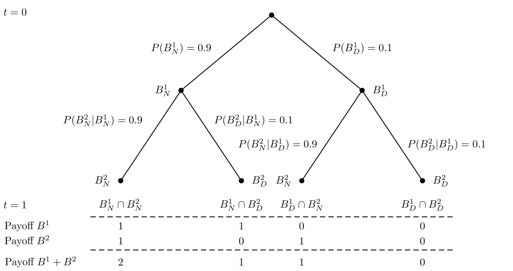

The Concept of Conditional Probability
Understanding Structured Finance: Bonds, Pools, and Tranches
To appreciate the significance of conditional probability, we begin with a crucial historical context: the financial crisis of 2007-2008. This global crisis exposed the vulnerabilities of structured finance, a domain where assumptions about independence and conditional probabilities played a pivotal role.
Bonds and Credit Risk
- Bond, face value, par value
- A bond is a financial instrument where the issuer agrees to pay the holder a specific amount, the face value or par value, at maturity. Bonds are widely used as fixed-income securities but carry the risk of default if the issuer faces financial difficulties.
To quantify this risk, bonds are rated by agencies such as Moody’s and Standard & Poor’s. Investment-grade bonds are considered low-risk, while speculative or “junk” bonds are riskier and more likely to default. Here is a summary of the rating schemes:
| Rating Category | Moody’s | Standard & Poor’s |
|---|---|---|
| High grade | Aaa | AAA |
| Aa | AA | |
| Medium grade | A | A |
| Baa | BBB | |
| Speculative grade | Ba | BB |
| B | B | |
| Default danger | Caa | CCC |
| Ca | CC | |
| C | C | |
| D |
Pooling and Tranching: The Innovation
Structured finance emerged in the early 2000s as a way to manage risk through pooling and tranching. By pooling risky assets and dividing cash flows into “tranches” with distinct risk profiles, financial engineers created new bonds, including investment-grade securities, from portfolios of junk bonds. A major product of this innovation was the mortgage-backed security (MBS).
An Illustrative Example: Junk Bonds and Event Trees
Consider a simple bond that pays €1 at maturity with a 10% chance of default. If we introduce a second identical bond, the combined system can be modeled as a probability tree:
This tree reflects the independence assumption: the likelihood of both bonds not defaulting is:
[ P(B^1_N B^2_N) = P(B^1_N) P(B^2_N) = 0.9 = 0.81 ]
Now, through pooling and tranching, these two junk bonds can be transformed into:
- Investment-grade bond ((I)): Defaults only if both bonds default ((P(I,) = 0.01)).
- Toxic junk bond ((J)): Pays only if neither bond defaults ((P(J,) = 0.99)).
The resulting securities create the illusion of reduced risk for some investors while concentrating risk for others.
The Pitfall of Dependent Risks
Structured finance relies heavily on the assumption of independence. But in reality, defaults are often correlated, especially during systemic crises. For instance, a recession might increase the likelihood of multiple defaults simultaneously, invalidating the independence assumption.
Under dependence, the probability of joint defaults increases, eroding the reliability of investment-grade ratings. This matters because investors and institutions, relying on these flawed ratings, underestimated the risk embedded in these securities. As defaults started to cluster during the financial crisis, losses quickly cascaded through the financial system. The assumed independence between risks provided a false sense of security, which led to over-leveraging and an inability to hedge adequately against systemic failures. Ultimately, this misjudgment amplified the scale and speed of the crisis, exposing the financial system’s vulnerability to correlated risks.
Lessons from Structured Finance
The structured finance example underscores the need for precise reasoning about conditional probabilities and independence. These concepts are not just abstract mathematical ideas—they have profound implications for real-world decision-making.
Bayes’ Theorem: Updating Beliefs with New Information
Bayes’ theorem allows us to update probabilities based on new evidence systematically. It not only provides a mechanism for incorporating new data but also addresses a critical question in probability theory: how do we connect frequencies with single-event probabilities?
Formal Definition
- Bayes’ Theorem
- Let \(A\) and \(B\) be two events with \(P(B) > 0\). Bayes’ theorem states: \[\begin{equation*} P(A \mid B) = \frac{P(B \mid A) P(A)}{P(B)} \end{equation*}\]
This formula bridges the gap between the frequentist interpretation of probability (long-run frequencies) and the Bayesian view (degrees of belief).
Frequency and Probability: Closing the Gap
The weak law of large numbers shows that frequencies converge to probabilities over many trials. However, it does not address how to interpret single-event probabilities. Bayes’ theorem provides this connection by allowing us to infer probabilities in light of observed frequencies.
Consider the structured finance example: observing mortgage delinquencies enables us to update the likelihood of bond defaults, moving from long-term averages to actionable probabilities.
Example 1: “Where Is the Speck?”
Imagine inspecting a camera lens for a speck of dust. Initially, the speck’s location is equally likely on the front lens, rear lens, or not on the lens at all. After observing a smudge on a test image, we update our beliefs using Bayes’ theorem.
# Define prior probabilities
prior <- c(front = 1/3, rear = 1/3, none = 1/3)
# Define likelihoods
likelihood <- c(front = 0.9, rear = 0.7, none = 0.1)
# Compute unnormalized posteriors
unnormalized <- prior * likelihood
# Normalize to get posterior probabilities
posterior <- unnormalized / sum(unnormalized)
posterior front rear none
0.52941176 0.41176471 0.05882353 Example 2: Overconfidence in Financial Risk Assessment
Overconfidence in structured finance often led to underestimating correlated risks. Bayesian updating can reveal the pitfalls of such optimism. Let’s streamline the R example:
# Define initial assumptions
prior <- c(independent = 0.9, dependent = 0.1)
# Define likelihoods of observed defaults under each scenario
likelihood <- c(independent = 0.05, dependent = 0.2)
# Compute unnormalized posteriors
unnormalized <- prior * likelihood
# Normalize to get posterior probabilities
posterior <- unnormalized / sum(unnormalized)
posteriorindependent dependent
0.6923077 0.3076923 Visualization
To visualize the updating process for the “Where Is the Speck?” example:
# Ensure prior and posterior are explicitly defined and have consistent lengths
prior <- c(front = 1/3, rear = 1/3, none = 1/3)
posterior <- c(front = 0.45, rear = 0.35, none = 0.2) # Example values consistent with prior
# Create the data frame
scenarios <- data.frame(
Scenario = rep(c("Prior", "Posterior"), each = 3),
Location = rep(c("Front", "Rear", "None"), 2),
Probability = c(prior, posterior)
)
# Visualization
library(ggplot2)
ggplot(scenarios, aes(x = Location, y = Probability, fill = Scenario)) +
geom_bar(stat = "identity", position = "dodge") +
labs(title = "Bayesian Updating: Speck Location", x = "Location", y = "Probability")